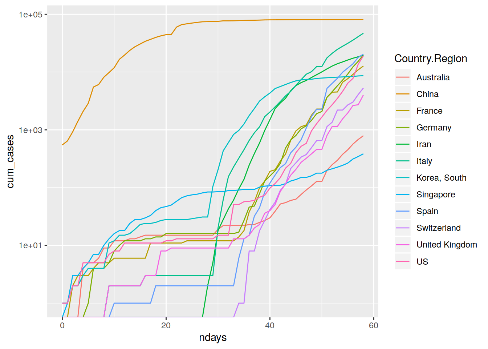
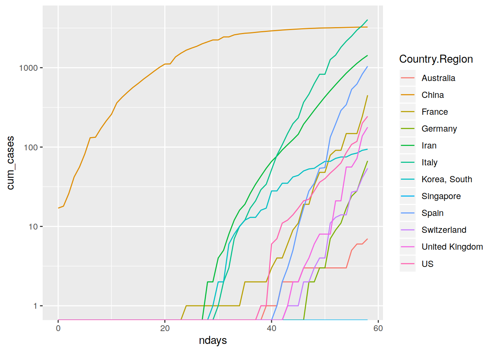
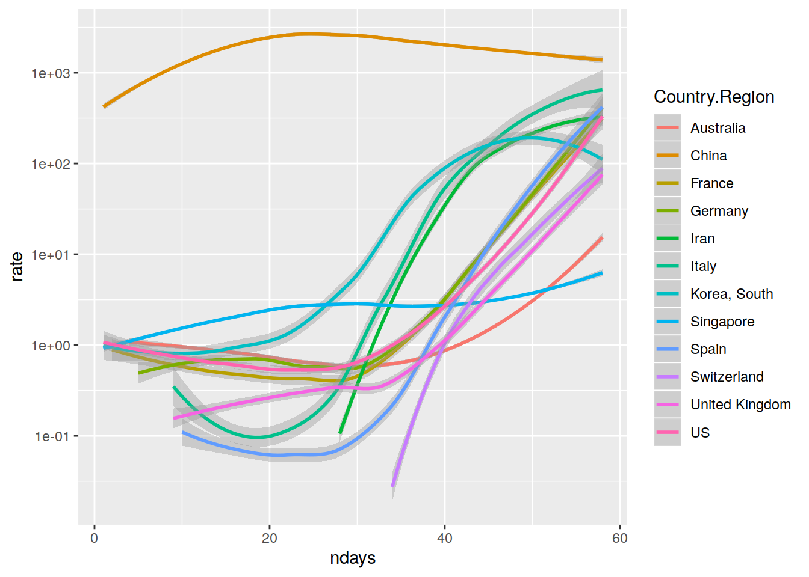
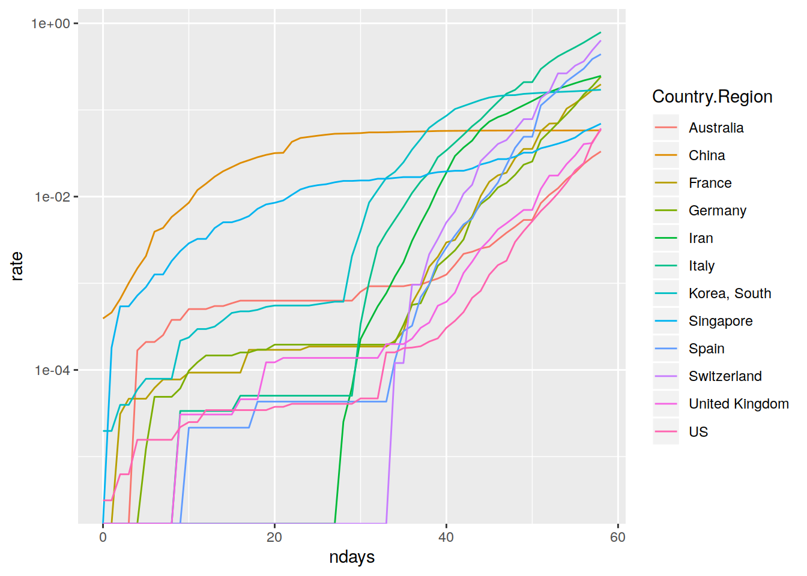
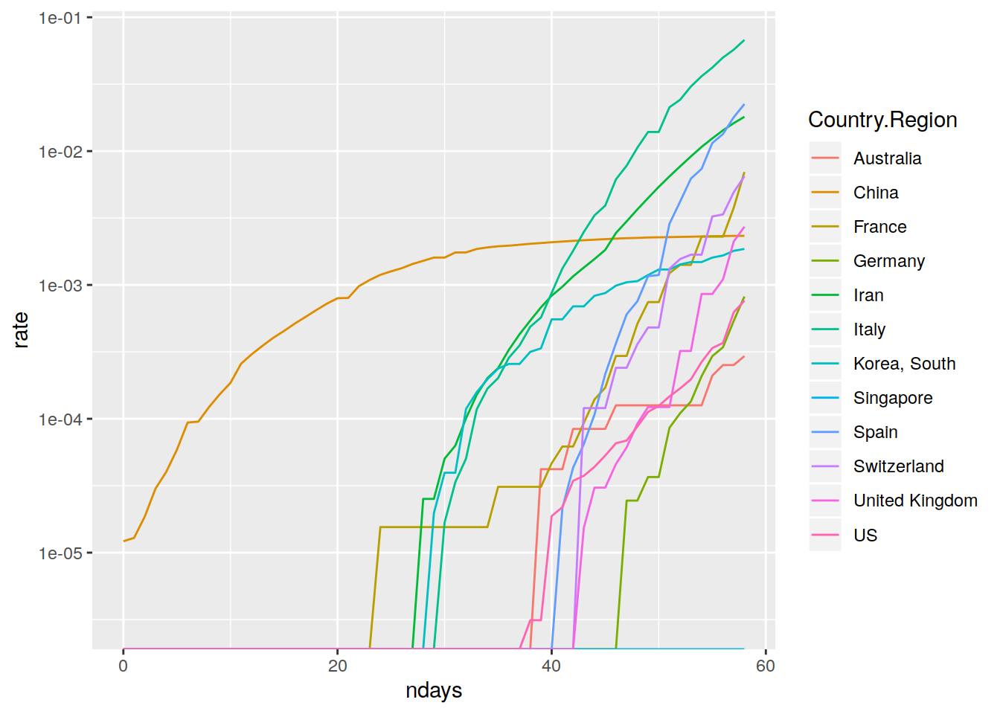
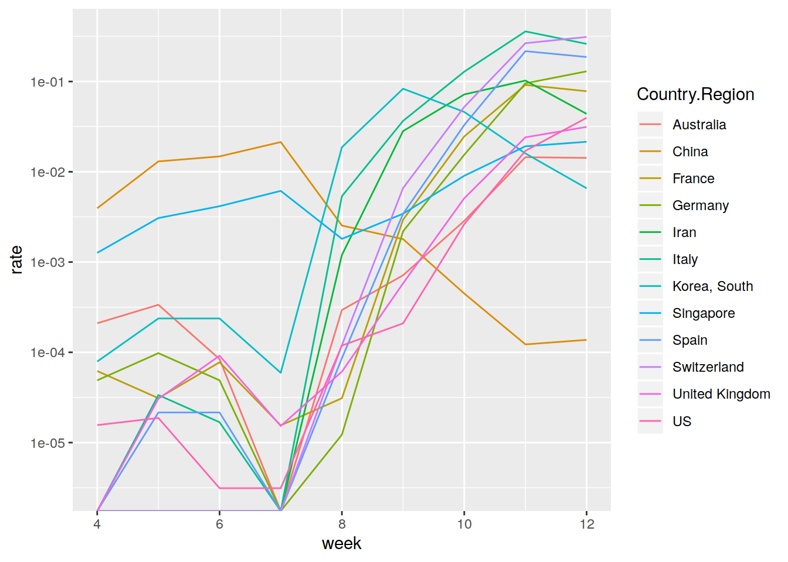

Last updated: 2020-03-16
Checks: 7 0
Knit directory: corona_virus/
This reproducible R Markdown analysis was created with workflowr (version 1.4.0.9001). The Checks tab describes the reproducibility checks that were applied when the results were created. The Past versions tab lists the development history.
Great! Since the R Markdown file has been committed to the Git repository, you know the exact version of the code that produced these results.
Great job! The global environment was empty. Objects defined in the global environment can affect the analysis in your R Markdown file in unknown ways. For reproduciblity it’s best to always run the code in an empty environment.
The command set.seed(20200306) was run prior to running the code in the R Markdown file. Setting a seed ensures that any results that rely on randomness, e.g. subsampling or permutations, are reproducible.
Great job! Recording the operating system, R version, and package versions is critical for reproducibility.
Nice! There were no cached chunks for this analysis, so you can be confident that you successfully produced the results during this run.
Great job! Using relative paths to the files within your workflowr project makes it easier to run your code on other machines.
Great! You are using Git for version control. Tracking code development and connecting the code version to the results is critical for reproducibility. The version displayed above was the version of the Git repository at the time these results were generated.
Note that you need to be careful to ensure that all relevant files for the analysis have been committed to Git prior to generating the results (you can use wflow_publish or wflow_git_commit). workflowr only checks the R Markdown file, but you know if there are other scripts or data files that it depends on. Below is the status of the Git repository when the results were generated:
Untracked files:
Untracked: scripts/
Note that any generated files, e.g. HTML, png, CSS, etc., are not included in this status report because it is ok for generated content to have uncommitted changes.
These are the previous versions of the R Markdown and HTML files. If you’ve configured a remote Git repository (see ?wflow_git_remote), click on the hyperlinks in the table below to view them.
| File | Version | Author | Date | Message |
|---|---|---|---|---|
| Rmd | d26169a | Dennis Wollersheim | 2020-03-15 | wflow_publish(“analysis/basic_stats.Rmd”) |
| html | f0e98f8 | Dennis Wollersheim | 2020-03-15 | Build site. |
| html | bee4cc9 | Dennis Wollersheim | 2020-03-09 | Build site. |
| html | 05e003b | Dennis Wollersheim | 2020-03-09 | Build site. |
| Rmd | c55fefd | Dennis Wollersheim | 2020-03-09 | workflowr::wflow_publish(“analysis/basic_stats.Rmd”) |
| html | fd52994 | Dennis Wollersheim | 2020-03-08 | Build site. |
| Rmd | fdaecfd | Dennis Wollersheim | 2020-03-08 | wflow_publish(“analysis/basic_stats.Rmd”) |
| Rmd | dfd0e1c | Dennis Wollersheim | 2020-03-08 | setup |
| html | dfd0e1c | Dennis Wollersheim | 2020-03-08 | setup |
| Rmd | 59b0a0b | Dennis Wollersheim | 2020-03-08 | setup |
| html | f7ba6bc | Dennis Wollersheim | 2020-03-08 | Build site. |
| Rmd | 1a8fc50 | Dennis Wollersheim | 2020-03-08 | wflow_publish(“analysis/basic_stats.Rmd”) |
Sourced from https://ramikrispin.github.io/coronavirus/ and the R package wpp2017, world population profile
If you want to know why Italy just quarantined 18 million people, read on.
suppressMessages(suppressWarnings( library(tidyverse)))
library(coronavirus)
library(wpp2017)
library(lubridate)
Attaching package: 'lubridate'The following object is masked from 'package:base':
datelibrary(dplyr)
data(pop)
pop %>%
as_tibble() %>%
{ . } -> pop
mapping = tribble(
~Country.Region, ~name,
'US', 'United States of America',
'UK', 'United Kingdom',
'Mainland China', 'China',
'South Korea', 'Republic of Korea',
'Taiwan','China, Taiwan Province of China',
'Vietnam', 'Viet Nam',
'Hong Kong', 'China, Hong Kong SAR',
'Russia', 'Russian Federation',
'Iran','Iran (Islamic Republic of)'
)
coronavirus %>%
left_join( mapping ) %>%
{ . } -> coronavirusJoining, by = "Country.Region"coronavirus %>%
filter( type=='confirmed' ) %>%
group_by( Country.Region ) %>%
summarise( cases = sum(cases)) %>%
top_n(10, cases) %>%
pluck('Country.Region') %>%
c('Australia', 'Singapore') %>%
{ . } -> top_10_countriescoronavirus %>%
filter( type=='confirmed' ) %>%
group_by( Country.Region ) %>%
mutate(ndays = date-min(date) ) %>%
group_by( Country.Region, ndays ) %>%
summarise( cases=sum(cases)) %>%
ungroup() %>%
group_by( Country.Region) %>%
filter( Country.Region %in% top_10_countries) %>%
arrange( ndays, .by_group=TRUE) %>%
mutate( cum_cases = cumsum( cases) ) %>%
ggplot(aes( ndays, cum_cases, color=Country.Region)) +
geom_line() +
scale_y_log10() +
scale_x_continuous()
coronavirus %>%
filter( type=='death' ) %>%
group_by( Country.Region ) %>%
mutate(ndays = date-min(date) ) %>%
group_by( Country.Region, ndays ) %>%
summarise( cases=sum(cases)) %>%
ungroup() %>%
group_by( Country.Region) %>%
filter( Country.Region %in% top_10_countries) %>%
arrange( ndays, .by_group=TRUE) %>%
mutate( cum_cases = cumsum( cases) ) %>%
ggplot(aes( ndays, cum_cases, color=Country.Region)) +
geom_line() +
scale_y_log10() +
scale_x_continuous()
coronavirus %>%
filter( type=='confirmed' ) %>%
filter( Country.Region != 'Others') %>%
group_by( Country.Region ) %>%
mutate(ndays = date-min(date) ) %>%
group_by( Country.Region, ndays ) %>%
summarise( cases=sum(cases)) %>%
ungroup() %>%
group_by( Country.Region) %>%
filter( Country.Region %in% top_10_countries) %>%
arrange( ndays, .by_group=TRUE) %>%
mutate( rate = cumsum(cases ) / as.integer(ndays) ) %>%
ggplot(aes( ndays, rate, color=Country.Region)) +
geom_smooth() +
scale_y_log10() +
scale_x_continuous()`geom_smooth()` using method = 'loess' and formula 'y ~ x'
Note, Japan had -1 cases on day 2
coronavirus %>%
mutate( name = ifelse(is.na(name), Country.Region, name)) %>%
inner_join(pop, by='name' ) %>%
filter( type=='confirmed' ) %>%
group_by( Country.Region ) %>%
mutate(ndays = date-min(date) ) %>%
group_by( Country.Region, ndays ) %>%
summarise( cases=sum(cases), population = min(`2015`)) %>%
ungroup() %>%
group_by( Country.Region) %>%
filter( Country.Region %in% top_10_countries) %>%
arrange( ndays, .by_group=TRUE) %>%
mutate( cumcases = cumsum(cases), rate = cumsum(cases ) / population ) %>%
ggplot(aes( ndays, rate, color=Country.Region)) +
geom_line() +
scale_y_log10() +
scale_x_continuous()
coronavirus %>%
mutate( name = ifelse(is.na(name), Country.Region, name)) %>%
inner_join(pop, by='name' ) %>%
filter( type=='confirmed' ) %>%
group_by( Country.Region ) %>%
mutate(week = week(date) ) %>%
group_by( Country.Region, week ) %>%
summarise( cases=sum(cases), population = min(`2015`)) %>%
ungroup() %>%
group_by( Country.Region) %>%
# filter( Country.Region=='Japan' ) %>%
filter( Country.Region %in% top_10_countries) %>%
mutate( rate = cases / population ) %>%
ggplot(aes( week, rate, color=Country.Region)) +
geom_line() +
scale_y_log10() +
scale_x_continuous()
coronavirus %>%
mutate( name = ifelse(is.na(name), Country.Region, name)) %>%
inner_join(pop, by='name' ) %>%
filter( type=='confirmed' ) %>%
group_by( Country.Region ) %>%
group_by( Country.Region, date ) %>%
summarise( cases=sum(cases), population = min(`2015`)) %>%
ungroup() %>%
group_by( Country.Region) %>%
# filter( Country.Region=='Japan' ) %>%
filter( Country.Region %in% top_10_countries) %>%
mutate( rate = cases / population ) %>%
ggplot(aes( date, rate, color=Country.Region)) +
geom_smooth() +
scale_y_log10() `geom_smooth()` using method = 'loess' and formula 'y ~ x'
coronavirus %>%
group_by( Country.Region, type) %>%
filter(date == max(date)) %>%
ungroup() %>%
select(country = Country.Region, type, cases, date) %>%
group_by(country, type) %>%
summarise(total_cases = sum(cases), date=max(date)) %>%
pivot_wider(names_from = type, values_from = total_cases) %>%
arrange(-confirmed)# A tibble: 143 x 5
# Groups: country [143]
country date confirmed death recovered
<chr> <date> <int> <int> <int>
1 Italy 2020-03-14 3497 175 527
2 Iran 2020-03-14 1365 97 0
3 Spain 2020-03-14 1159 62 324
4 Germany 2020-03-14 910 2 0
5 France 2020-03-14 813 12 0
6 US 2020-03-14 548 7 0
7 United Kingdom 2020-03-14 342 13 0
8 Switzerland 2020-03-14 220 2 0
9 Netherlands 2020-03-14 155 2 2
10 Austria 2020-03-14 151 0 0
# … with 133 more rows
sessionInfo()R version 3.6.1 (2019-07-05)
Platform: x86_64-pc-linux-gnu (64-bit)
Running under: Ubuntu 18.04.4 LTS
Matrix products: default
BLAS: /usr/lib/x86_64-linux-gnu/openblas/libblas.so.3
LAPACK: /usr/lib/x86_64-linux-gnu/libopenblasp-r0.2.20.so
locale:
[1] LC_CTYPE=en_US.UTF-8 LC_NUMERIC=C
[3] LC_TIME=en_US.UTF-8 LC_COLLATE=en_US.UTF-8
[5] LC_MONETARY=en_US.UTF-8 LC_MESSAGES=en_US.UTF-8
[7] LC_PAPER=en_US.UTF-8 LC_NAME=C
[9] LC_ADDRESS=C LC_TELEPHONE=C
[11] LC_MEASUREMENT=en_US.UTF-8 LC_IDENTIFICATION=C
attached base packages:
[1] stats graphics grDevices utils datasets methods base
other attached packages:
[1] lubridate_1.7.4 wpp2017_1.2-3 coronavirus_0.1.0.9002
[4] forcats_0.5.0 stringr_1.4.0 dplyr_0.8.5
[7] purrr_0.3.3 readr_1.3.1 tidyr_1.0.2
[10] tibble_2.1.3 ggplot2_3.2.1 tidyverse_1.3.0
[13] nvimcom_0.9-82
loaded via a namespace (and not attached):
[1] httr_1.4.1 pkgload_1.0.2 jsonlite_1.6.1
[4] modelr_0.1.6 assertthat_0.2.1 cellranger_1.1.0
[7] yaml_2.2.1 remotes_2.1.1 sessioninfo_1.1.1
[10] pillar_1.4.3 backports_1.1.5 lattice_0.20-40
[13] glue_1.3.2 digest_0.6.25 rvest_0.3.5
[16] colorspace_1.4-1 htmltools_0.4.0 pkgconfig_2.0.3
[19] devtools_2.2.2 broom_0.5.5 haven_2.2.0
[22] scales_1.1.0 processx_3.4.1 whisker_0.4
[25] git2r_0.26.1 farver_2.0.1 generics_0.0.2
[28] usethis_1.5.1 ellipsis_0.3.0 withr_2.1.2
[31] lazyeval_0.2.2 cli_2.0.2 magrittr_1.5
[34] crayon_1.3.4 readxl_1.3.1 memoise_1.1.0
[37] evaluate_0.14 ps_1.3.2 fs_1.3.2
[40] fansi_0.4.1 nlme_3.1-142 xml2_1.2.2
[43] pkgbuild_1.0.6 data.table_1.12.8 tools_3.6.1
[46] prettyunits_1.1.1 hms_0.5.3 lifecycle_0.2.0
[49] munsell_0.5.0 reprex_0.3.0 callr_3.4.2
[52] compiler_3.6.1 rlang_0.4.5 grid_3.6.1
[55] rstudioapi_0.11 labeling_0.3 rmarkdown_2.1
[58] testthat_2.3.2 gtable_0.3.0 DBI_1.1.0
[61] curl_4.3 R6_2.4.1 knitr_1.28
[64] utf8_1.1.4 workflowr_1.4.0.9001 rprojroot_1.3-2
[67] desc_1.2.0 stringi_1.4.6 Rcpp_1.0.3
[70] vctrs_0.2.4 dbplyr_1.4.2 tidyselect_1.0.0
[73] xfun_0.11